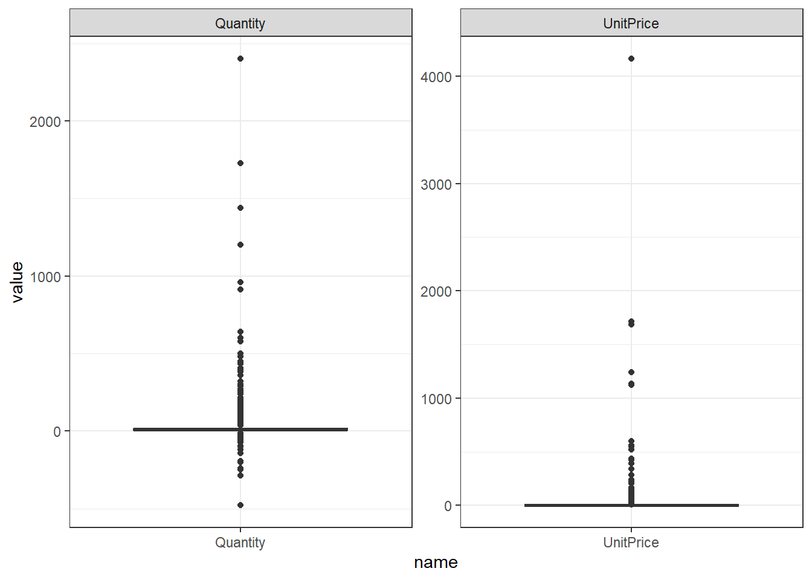

pacman::p_load(tidyverse, tidymodels, data.table, gt,
skimr, ggcorrplot, themis, solitude)
db_1a <- fread("test/26/problem1.csv") 제26회 ADP 실기 문제 풀이
1.
1.1.
결측치를 확인하고 제거하라
필요한 패키지 및 데이터를 불러온다.
skim 함수로 데이터를 먼저 파악한다.
db_1a %>% skimr::skim()| Name | Piped data |
| Number of rows | 35801 |
| Number of columns | 8 |
| Key | NULL |
| _______________________ | |
| Column type frequency: | |
| character | 5 |
| numeric | 3 |
| ________________________ | |
| Group variables | None |
Variable type: character
| skim_variable | n_missing | complete_rate | min | max | empty | n_unique | whitespace |
|---|---|---|---|---|---|---|---|
| InvoiceNo | 0 | 1 | 6 | 7 | 0 | 1846 | 0 |
| StockCode | 0 | 1 | 1 | 7 | 0 | 2668 | 0 |
| Description | 0 | 1 | 6 | 36 | 0 | 2759 | 0 |
| InvoiceDate | 0 | 1 | 13 | 16 | 0 | 1827 | 0 |
| Country | 0 | 1 | 4 | 11 | 0 | 8 | 0 |
Variable type: numeric
| skim_variable | n_missing | complete_rate | mean | sd | p0 | p25 | p50 | p75 | p100 | hist |
|---|---|---|---|---|---|---|---|---|---|---|
| Quantity | 25 | 1 | 18.43 | 42.16 | -480 | 4.00 | 10.00 | 16.00 | 2400.00 | ▇▁▁▁▁ |
| UnitPrice | 97 | 1 | 4.61 | 48.08 | 0 | 1.25 | 1.95 | 3.75 | 4161.06 | ▇▁▁▁▁ |
| CustomerID | 0 | 1 | 13221.82 | 1012.18 | 12354 | 12523.00 | 12681.00 | 14156.00 | 17097.00 | ▇▁▂▁▁ |
데이터는 8개 열과 35,801개 관측치로 구성된다. 8개 열 중 5개는 문자, 3개는 수치형 데이터며, 수치형 데이터에서 결측치가 존재한다. Quantity와 UnitPrice 각각 25개, 97개 결측치를 제거한다.
db_1b <- db_1a %>%
filter(!(is.na(Quantity) | is.na(UnitPrice)))결측치가 제거된 결과를 확인한다.
db_1b %>% complete_rate()[1] 11.2.
이상치를 제거하는 방법을 설명하고, 이상치를 제거한 후 결과를 통계적으로 나타내라.
이상치는 다음 방법으로 제거할 수 있다:
- 3시그마 원칙: 평균에서 표준편차의 3배 이상 떨어진 값을 제거
- 상자그림: Box Plot에서 상자 위 아래 연장되는 선인 수염을 벗어나는 값 제거; 1.5 * IQR (사분위수 범위)
데이터 분포를 파악하기 위해 먼저 상자그림으로 시각화를 한다. 수치형 중, CustomerID는 개별 소비자의 고유 번호로 제외하고 나머지 두 수치형 데이터를 기준으로 만든다.
db_1b %>% select(Quantity, UnitPrice) %>%
pivot_longer(cols = everything()) %>% # 모든 변수 long 변환
ggplot(aes(x = name, y = value)) +
geom_boxplot() + facet_wrap(name ~ ., scales = "free") +
theme_bw()
두 변수의 Box Plot에서 수염을 벗어난 이상치가 보여 이를 제거 한다.
# 이상치 ID 리스트
db_1b <- db_1b %>%
mutate(ID = as.factor(row_number())) # 고유 ID 부여
list_id_outlier <- db_1b %>%
select(ID, Quantity, UnitPrice) %>%
pivot_longer(cols = c(Quantity, UnitPrice)) %>%
group_by(name) %>%
mutate(IQR = quantile(value, 0.75) - quantile(value, 0.25), # 상자 길이
bound_lower = quantile(value, 0.25) - (IQR * 1.5),
bound_upper = quantile(value, 0.75) + (IQR * 1.5)) %>%
ungroup() %>%
filter(!between(value, bound_lower, bound_upper)) %>%
select(ID) %>% pull()
db_1c <- db_1b %>%
filter(!(ID %in% list_id_outlier)) 이상치 제거한 결과를 비교한다.
db_1b %>% select(ID, Quantity, UnitPrice) %>% skim() %>%
filter(skim_type %in% c("numeric")) | Name | Piped data |
| Number of rows | 35679 |
| Number of columns | 3 |
| Key | NULL |
| _______________________ | |
| Column type frequency: | |
| numeric | 2 |
| ________________________ | |
| Group variables | None |
Variable type: numeric
| skim_variable | n_missing | complete_rate | mean | sd | p0 | p25 | p50 | p75 | p100 | hist |
|---|---|---|---|---|---|---|---|---|---|---|
| Quantity | 0 | 1 | 18.44 | 42.2 | -480 | 4.00 | 10.00 | 16.00 | 2400.00 | ▇▁▁▁▁ |
| UnitPrice | 0 | 1 | 4.61 | 48.1 | 0 | 1.25 | 1.95 | 3.75 | 4161.06 | ▇▁▁▁▁ |
db_1c %>% select(ID, Quantity, UnitPrice) %>% skim() %>%
filter(skim_type %in% c("numeric")) | Name | Piped data |
| Number of rows | 27657 |
| Number of columns | 3 |
| Key | NULL |
| _______________________ | |
| Column type frequency: | |
| numeric | 2 |
| ________________________ | |
| Group variables | None |
Variable type: numeric
| skim_variable | n_missing | complete_rate | mean | sd | p0 | p25 | p50 | p75 | p100 | hist |
|---|---|---|---|---|---|---|---|---|---|---|
| Quantity | 0 | 1 | 10.68 | 7.11 | -14 | 6.00 | 10.00 | 12.00 | 34.0 | ▁▃▇▂▁ |
| UnitPrice | 0 | 1 | 2.19 | 1.51 | 0 | 1.25 | 1.65 | 2.95 | 7.5 | ▇▇▂▂▁ |
총 35,679개 관측치 중 27,657개 관측치만이 남았으며, Quantity와 UnitPrice의 극단적인 데이터도 사라졌다. 예를 들어, 전처리 전 데이터의 quantity의 최대값은 2400이지만 이상치 제거 후는 34며, 히스토그램도 극단적이지 않은 정규분포에 가까운 것으로 보인다.
1.3.
전처리한 데이터로 Kmeans, DBSCANE 등 방법으로 군집을 생성
전처리 과정을 진행한다.
- 수량인 Quantity은 음수 값을 가질 수 없으므로, 0보다 작은 값 제거
- 군집분석에 사용할 변수 선택
- InvoiceNo, StockCode, Description, CustomerID는 ID로 적합하지 않음
- Quantity, UnitPrice, Country, InvoiceDate는 군집분석 활용
db_1d <- db_1c %>%
# 날짜변수 설정
mutate(InvoiceDate = lubridate::parse_date_time(InvoiceDate, "m/d/y H:M")) %>%
recipe( ~ .) %>%
# 역할 부여
update_role(ID, CustomerID, InvoiceNo, new_role = "ID") %>%
# 요일 처리
step_date(InvoiceDate, features = c("dow")) %>%
# 필요 없는 변수 제거
step_dummy(Country, InvoiceDate_dow) %>%
step_rm(Description, all_string_predictors(), all_datetime()) %>%
# 수치형 데이터 표준화
step_normalize(UnitPrice, Quantity) %>%
prep() %>% juice()군집분석에 필요한 패키지를 불러온다.
pacman::p_load(factoextra, dbscan, Rtsne)
factoextra::fviz_nbclust(db_1d %>% select(-c(InvoiceNo, StockCode, ID, CustomerID)), dbscan)
dbscan(db_1d %>% select(-c(InvoiceNo, StockCode, ID, CustomerID)), eps = 10, minPts = 5)
tsne_result <- Rtsne(db_1d %>% select(-c(InvoiceNo, StockCode, ID, CustomerID)), dims = 2)
tsne_data <- data.frame(tsne_result$Y)
colnames(tsne_data) <- c("Dimension1", "Dimension2")
철강 제품의 불량률을 조사하고자 한다. 이 때, 불량률의 90%, 추정오차한계가 5% 이내가 되기 위하여 적절한 표본의 크기 중 최소값은 얼마인가?
이 문제는 표본조사를 실시할 때, 불량에 관한 모평균이 90% 신뢰구간에서 추정오차한계가 5% 이내가 되도록하는 최소 표본 크기를 구하는 것이다.
먼저 표준오차(SE)는 표본 평균의 표준 편차로, 모집단의 표준 편차를 표본 크기 제곱(n)으로 나눈 것이다. \[SE = \frac{{\sigma}}{{\sqrt{n}}}\] 여기서 우리는 표준오차(SE)는 모른다. 하지만 단서는 표준오차가 90% 이내 신뢰구간에 속해야 한다. 이를 표준 정규 분포, Z 점수로 표현하면 다음과 같다. \[Z = \frac{{E}}{{SE}}\]
두 식을 결합하면 다음과 같다.\[E = Z \cdot SE = Z \cdot \frac{{\sigma}}{{\sqrt{n}}}\]
여기서 N을 구하는 식으로 바꾸면 다음과 같다. \[n = \frac{{Z^2 \cdot p \cdot (1-p)}}{{E^2}}\]
위 공식을 R을 대입해 쓰면 다음과 같다.
# 변수 정의
confidence_level <- 0.90
margin_of_error <- 0.05
z_score <- qnorm((confidence_level + 1) / 2) # 90% 신뢰수준에 대한 Z 점수 계산
anticipated_proportion <- 0.5 # 불량률 가정
# 표본 크기 계산
sample_size <- (z_score^2 * anticipated_proportion * (1 - anticipated_proportion)) / margin_of_error^2
sample_size <- ceiling(sample_size) # 실제 조사에선 표본 크기를 정수로 취해야 함
print(sample_size)[1] 271